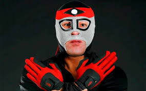

Nombre real: Juan Escalera
Fecha de nacimiento: 27 de marzo de 1961
Lugar de nacimiento: Veracruz, México
Alias: Octagón o El Amo De Los Ocho Angulos
Debutó en 1981 y alcanzó fama en los 90s por su personaje inspirado en las artes marciales. Es ícono de la AAA.
Tuvo grandes rivalidades con Fuerza Guerrera y fue protagonista de varias películas y cómics.
Octagón ha sido una figura defensora de los derechos de los luchadores. Sigue siendo respetado por su legado en AAA y CMLL.